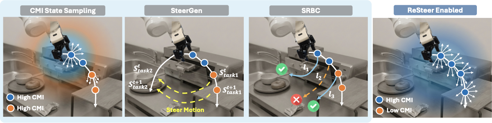
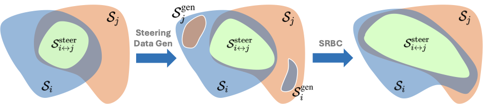
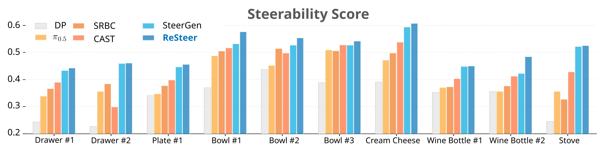
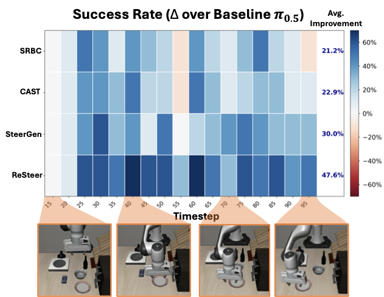

Despite strong multi-task pretraining, existing policies often exhibit poor task steerability. For example, a robot may fail to respond to a new instruction "put the bowl in the sink" when moving towards the oven, executing "close the oven", even though it can complete both tasks when executed separately. We propose ReSteer, a framework to quantify and improve task steerability in multitask robot policies. We conduct an exhaustive evaluation of state-of-the-art policies, revealing a common lack of steerability. We find that steerability is associated with limited overlap among training task trajectory distributions, and introduce a proxy metric to measure this overlap from policy behavior. Building on this insight, ReSteer improves steerability via three components: (i) a steerability estimator that identifies low-steerability states without full-rollout evaluation, (ii) a steerable data generator that synthesizes motion segments from these states, and (iii) a self-refinement pipeline that improves policy steerability using the generated data. In simulation on LIBERO, ReSteer improves steerability by 11% over 18k rollouts. In real-world experiments, we show that improved steerability is critical for interactive use, enabling users to instruct robots to perform any task at any time. We hope this work motivates further study on quantifying steerability and data collection strategies for large robot policies.
Figure: Steerability is measured by injecting new prompts at different rollout timesteps and aggregating switched-task success into an average steerability score.

Figure: Full ReSteer pipeline from steerability-aware state mining to synthetic steering data generation and iterative policy self-refinement.
ReSteer is built on the hypothesis that poor steerability is largely a data coverage problem: policies need explicit trajectory segments that represent mid-execution task switches. The data generation stage uses steerability signals to identify difficult states, then synthesizes transitions to target states under new task prompts.

Figure: Steering trajectory synthesis expands overlap between task-conditioned trajectory distributions, improving reachable transitions during instruction switching.

Figure: ReSteer consistently improves steerability score across tasks versus baseline policies, showing stronger task switching under the same rollout conditions.

Figure: On LIBERO, ReSteer yields the largest average gain in switched-task success over baseline policy performance across switch timesteps.
@article{resteer2026,
title = {ReSteer: Quantifying and Refining the Steerability of Multitask Robot Policies},
author = {Chen, Zhenyang and Tian, Alan and Wang, Liquan and Joffe, Benjamin and Lin, Yingyan Celine and Chen, Yuxiao and Karamcheti, Siddharth and Xu, Danfei},
year = {2026}
}